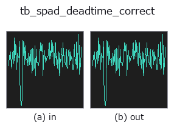

typed op• Datenarten: counts → counts
• Aufruf: fullseye.apply(img, "tb_spad_deadtime_correct", a=0.5, b=0.5) (das 2-D-Modell ist ein Bild plus zwei skalare Regler a,b∈[0,1])

*Die Abbildung ist die tatsächliche Ausgabe auf einer synthetischen 128×128-Eingabe. Links Eingabe, rechts Ausgabe. Punktwolken als Draufsicht-Streudiagramm (Helligkeit = z), 1-D-Reihen als Linie, Volumen als Maximum-Projektion entlang z, Videos als mittleres Bild, komplexe Bilder als Betrag; Rückgabewerte, die kein Bild ergeben, werden als Werte gezeigt.*
Regler a durchfahren (0,1 / 0,5 / 0,9, der andere Regler auf Standard):
▸ tb_spad_deadtime_correct: knob a sweep (docs site)
*Regler b ändert die Ausgabe nicht (gemessen: identisch bei 0,1 / 0,5 / 0,9).*
Stufen (die vorangehenden Ops → dieser Op, von links nach rechts):
▸ tb_spad_deadtime_correct: stages (docs site)
Auf anderen Bildern (synthetische Szene / Foto / Münzen. Obere Reihe: Eingaben, untere Reihe: deren Ausgaben. Regler auf Standard):
▸ tb_spad_deadtime_correct: other inputs (docs site)
Wiederherstellung der wahren Photonenrate aus einer durch Totzeit verzerrten Messrate.
> Die ausführliche Beschreibung unten ist der Originaltext — Zusammenfassung und Überschriften sind übersetzt.
The exact inverse of the non-paralysable law of
:func:spad_deadtime_apply::
n = m / (1 - m*tau)
A round trip `apply -> correct` is exact to machine precision (measured max
elementwise relative error 6.0e-16 over 2000 rates spanning 1e3 to 5e7 Hz at
`tau = 50 ns`, where the measured rate reaches 71.4% of the 20 MHz
saturation rate).
There is deliberately no paralysable inverse. `m = n*exp(-n*tau)` is not
injective — every measured rate below the maximum `1/(e*tau)` corresponds to
*two* true rates, one below and one above `1/tau` — so returning one of them
would be a fabrication dressed as a correction. Resolve the branch with an
independent measurement (e.g. an attenuator step) and invert it yourself.
*measured_hz* is a 1-D array of measured rates in counts per second;
*dead_time_ns* the dead time in nanoseconds (default 50, the same
placeholder :func:spad_deadtime_apply uses — replace it with the
datasheet value). Returns the corrected true rates as a float64 1-D array.
Raises `ValueError`: negative, non-finite or non-1-D *measured_hz*, a
non-positive *dead_time_ns*, and — instead of returning `inf` or a negative
rate — any measured rate at or above the saturation rate `1/tau`, which no
non-paralysable detector can ever produce.
Typed bridge of the photon op `spad_deadtime_correct into the 2-D evolution registry: the same implementation, called under the op(v, a, b) convention. a drives dead_time_ns (default 50); b` is unused.
• Katalog der Beispieldaten (Download-URLs / Lizenzen) — 2-D nutzt skimage.data (BSD/Public Domain) plus synthetische Bilder, 3-D nennt Download-URLs echter Datenquellen (Stanford, PDS, …).
• Herkunft und Literatur der Operatoren — die Quellen der Forschung/Verfahren, auf denen diese Operatorfamilie beruht.
Das Programm unten ist nachweislich lauffähig (gleiche Eingabe wie die Abbildung). In der Studio-Hilfe wird dieser Block zu Schaltflächen, die es sofort laden und ausführen.
img_to_counts 0.50 0.50 tb_spad_deadtime_correct 0.50 0.50
▸ Load this pipeline · Load & run
Die folgenden Beispiele rufen den zugrunde liegenden Ledger-Op spad_deadtime_correct auf. Dieser Brücken-Op ist dieselbe Implementierung, angepasst an die Konvention fn(v, a, b); das Verhalten gilt unverändert (nur die Aufrufform unterscheidet sich).
• photon_timeresolved — py -3.11 examples/photon_timeresolved.py
counts als Eingabe)identity · tb_spad_deadtime_apply · tb_tcspc_coates_correct · tb_tcspc_irf_convolve · tb_tcspc_background_subtract · tb_dtof_depth · tb_countrate_to_counts · tb_counts_to_countrate
typed)tb_points_to_voxel · tb_estimate_point_normals · tb_iss_keypoints · tb_project_points · tb_render_point_depth · tb_statistical_outlier_removal · tb_radius_outlier_removal · tb_voxel_grid_downsample
*Provenance: ops.py — 2D Operator-Registry. Diese Notiz wird von tools/opdocs.py md erzeugt (nicht von Hand bearbeiten).*
© 2026 Kazufumi Furuse — Fullseye operator documentation. Licensed under Apache-2.0.
{kind=link}
{kind=link}
{kind=link}